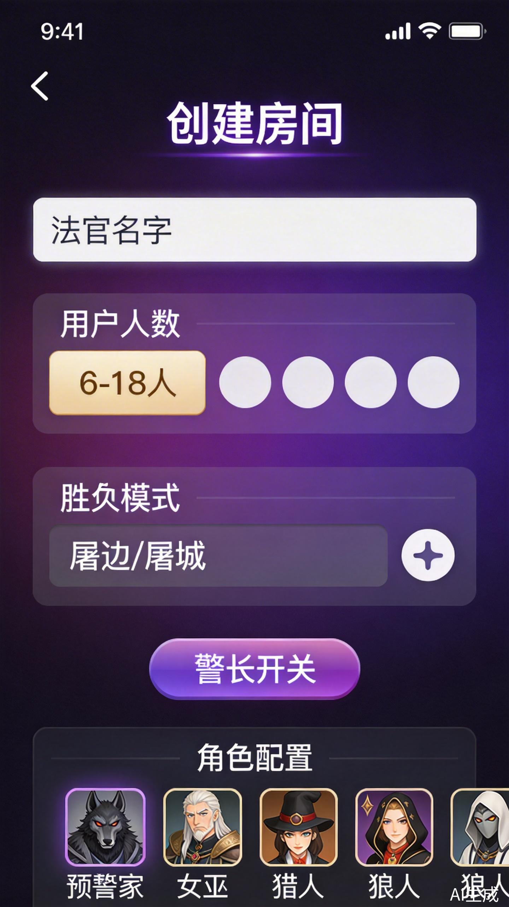
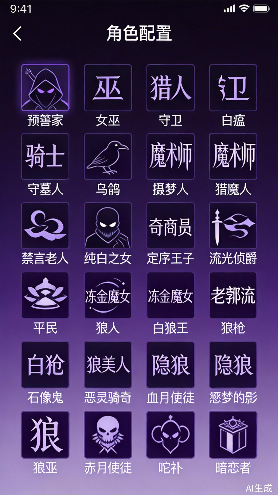
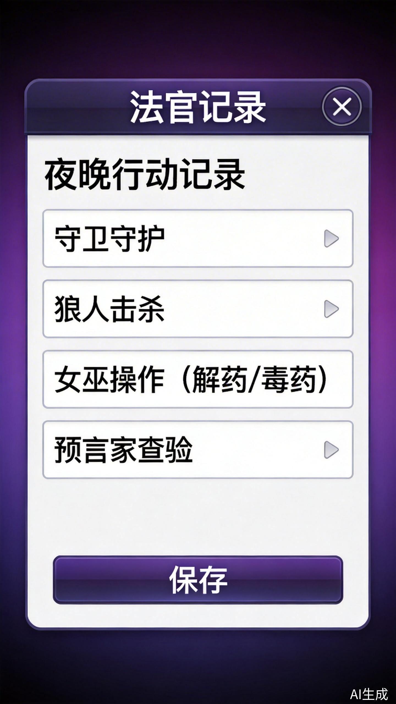

跨设备同步版 - 使用指南
狼人杀发牌员是一款支持跨设备同步的狼人杀游戏辅助工具。法官创建房间后，玩家通过房间号加入，所有操作实时同步，让线下狼人杀游戏更加便捷。
访问网址：https://xjqfcmek5qaew.ok.kimi.link
选择"我是法官"进入房间创建页面
设置玩家人数、胜负模式、是否开启警长
将6位数字房间号告诉所有玩家


使用与法官相同的网址
选择"我是玩家"
输入法官提供的6位房间号，设置你的名字（建议格式：位置+姓名）
支持6-20人游戏，法官不计入玩家人数。根据人数会自动推荐合适的板子配置。
| 模式 | 狼人胜利条件 | 好人胜利条件 |
|---|---|---|
| 屠边 | 杀死所有神职或所有平民 | 投票投出所有狼人 |
| 屠城 | 杀死所有好人（神职+平民） | 投票投出所有狼人 |
8人以上默认开启警长，但法官可以手动关闭。警长拥有1.5票投票权和归票权。
系统会根据人数和胜负模式自动推荐板子，法官也可以选择"自定义"调整角色配置。
在等待阶段，法官可以在玩家列表底部输入玩家名字并点击"+"按钮添加玩家。
点击玩家名字旁边的编辑图标（✏️），输入新名字后按回车或点击确认保存。
点击玩家旁边的删除图标（❌），确认后即可将玩家踢出房间。被踢出的位置可以让新玩家补位。
当所有玩家加入后，点击底部"开始发牌"按钮。系统会随机分配角色给所有玩家。
发牌后，法官可以在玩家列表中看到每个玩家的角色。玩家只能看到自己的角色。
游戏进行中，点击玩家旁边的骷髅图标可以标记玩家死亡/存活状态。
在"玩家"标签页中，可以：
游戏结束后，法官可以点击"重新开始"清空所有角色，回到等待阶段。

在游戏进行中，法官可以切换到"记录"标签页，记录每晚的行动和白天的投票。
点击"记录夜晚"按钮，依次记录：
点击"记录白天"按钮，记录：
系统会根据胜负模式自动判断游戏是否结束，并提示获胜阵营。
玩家加入房间的步骤：
法官发牌后，玩家可以在"玩家"标签页看到自己的角色卡片：
进入房间后如果需要修改名字：
点击左上角的"退出"按钮，确认后即可退出房间。退出后可以重新加入。
| 角色 | 阵营 | 技能 | 关键提示 |
|---|---|---|---|
| 预言家 | 神职 | 每晚查验一名玩家身份 | 保护好自己，不要轻易暴露 |
| 女巫 | 神职 | 一瓶解药（救人），一瓶毒药（杀人） | 解药毒药各一瓶，每晚只能用一瓶 |
| 猎人 | 神职 | 死亡时可开枪带走一人 | 被毒死不能开枪！ |
| 守卫 | 神职 | 每晚守护一名玩家不被狼人击杀 | 不能连续守护同一人 |
| 白痴 | 神职 | 被投票出局可翻牌免疫 | 翻牌后失去投票权但可发言 |
| 长老 | 神职 | 被狼人击杀两次才死亡 | 被投票出局直接死亡 |
| 骑士 | 神职 | 白天可决斗一名玩家 | 对方是狼人则狼死，否则骑士死 |
| 平民 | 平民 | 无特殊技能 | 通过发言和投票找狼 |
| 狼人 | 狼人 | 每晚与狼队友一起击杀 | 白天可以悍跳神职 |
| 白狼王 | 狼人 | 白天自爆可带走一人 | 常用于带走明神职 |
| 狼枪 | 狼人 | 被票出可开枪带走一人 | 被毒死不能开枪！ |
| 守墓人 | 神职 | 每晚知道前一天被放逐者的阵营 | 利用信息判断场上局势 |
| 乌鸦 | 神职 | 每晚诅咒一人，放逐时额外一票 | 不能连续两晚诅咒同一人 |
| 魔术师 | 神职 | 每晚交换两人号码牌 | 可以让狼人自相残杀 |
| 摄梦人 | 神职 | 每晚选择梦游者，免疫夜间伤害 | 连续两晚选同一人则该人死亡 |
| 猎魔人 | 神职 | 每晚狩猎，狼人死否则自己死 | 免疫女巫毒药 |
| 禁言长老 | 神职 | 每晚禁言一名玩家白天不能发言 | 不能连续两晚禁言同一人 |
| 奇迹商人 | 神职 | 给幸运儿一个技能（查验/毒药/守护） | 幸运儿是狼人则商人次日出局 |
| 纯白之女 | 神职 | 查验身份，验到狼人则狼人出局 | 从第二夜起生效 |
| 定序王子 | 神职 | 限一次，逆转投票重新投票 | 发动技能后狼人不能自爆 |
| 流光伯爵 | 神职 | 每晚庇护一人，免疫夜间伤害 | 不能连续庇护同一人，不能自庇 |
| 炼金魔女 | 神职 | 未明之雾限制狼刀范围，法老之蛇救人 | 各只能使用一次 |
| 老流氓 | 平民 | 被毒/射杀后延迟死亡 | 珍惜最后一次发言机会 |
| 狼美人 | 狼人 | 魅惑玩家，自己死亡时带走被魅惑者 | 不能自爆或自刀，被决斗则失效 |
| 石像鬼 | 狼人 | 每晚查验玩家具体身份 | 与狼队友不见面 |
| 隐狼 | 狼人 | 查验为好人，知道狼队友 | 不能与其他狼人一起刀人 |
| 恶灵骑士 | 狼人 | 被查验/毒时反伤 | 一次性技能 |
| 血月使徒 | 狼人 | 自爆封印好人技能 | 最后狼人被放逐可多活一天 |
| 噩梦之影 | 狼人 | 每晚恐惧一人封印技能 | 从第二晚可恐惧狼队友使其多一刀 |
| 狼巫 | 狼人 | 查验身份，验到纯白则纯白出局 | 从第二夜起生效 |
| 赤月使徒 | 狼人 | 自爆封印好人技能 | 自爆后会翻牌亮明身份 |
| 丘比特 | 第三方 | 连接两名玩家成为情侣 | 情侣同生共死 |
| 暗恋者 | 第三方 | 暗恋一名玩家，阵营跟随暗恋对象 | 不知道暗恋对象的身份 |
请检查网络连接，确保能正常访问互联网。如果问题持续，请刷新页面重试。
法官可以踢出一个等待中的玩家，或者重新开始一局游戏。
请玩家切换到"玩家"标签页，点击"翻开身份"按钮查看角色卡片。
不能。女巫解药用完后，法官不会再告知当晚的死者。
同守同救会导致该玩家死亡（奶穿）。
不可以。只能在等待阶段添加玩家，游戏开始后无法添加。
法官退出后，房间会关闭，所有玩家都会被断开。建议法官在游戏结束前不要退出。
在等待阶段，法官可以点击"角色配置"区域的"自定义"按钮调整角色配置。